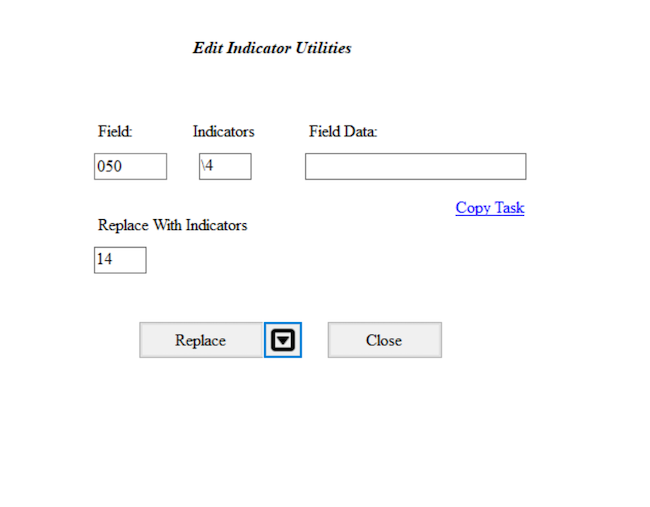
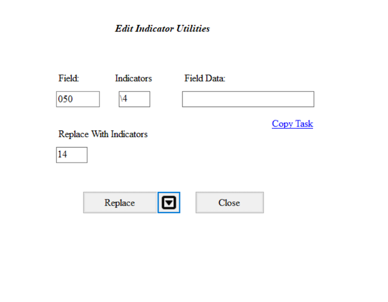

Manipulating MARC data basics
Last updated on 2023-10-12 | Edit this page
Overview
Questions
- How can MARC data be manipulated?
- How can fields, subfields, and/or indicators be added, changed, or removed?
- How can fixed fields be manipulated?
- What is the difference between save and compile?
Objectives
- Explain how to find, find all, and replace
- Explain how to add, update, and remove fields, subfields, indicators, and fixed fields
- Explain the difference between save and compile
- Successfully manipulate MARC data
- Successfully save your MARC data
- Successfully compile your MARC data
Manipulating MARC data
We’ve seen how we can manually and individually edit records in the MarcEditor, however, MarcEdit provides a number of more powerful ways to manipulate our MARC data. Fields, subfields, indicators can be added, removed, or changed. Fixed fields can be corrected. Fields and subfields specific to RDA can be added while AACR2 conventions are removed. It is possible to work with a subset of MARC data and then incorporate those changes into the original whole MARC data set. The variations sometime seem endless and give more weight to the nickname of MarcEdit, the swiss army knife of MARC data.
Find, Find All, and Replace
Like many other applications, the MarcEditor offers the ability to Find, Find All, and Replace.
Find: Find will search as a keyword what you enter into the Find window search box. This option will only search the current page in the MarcEdit. Remember that the default settings splits the MARC records into 100 for each page. Find will only search those records on the page you are currently on.
Find All: Find all will search for your search terms entered in the Find window search box over all the pages, or all your MARC records.
Replace: Replace works alongside Find or Find all. You have the option to Replace just those on the page or Replace all where the replace occurs on all pages in all records.
If you want to Find or Find all a MARC field, you will need to include the equals sign before the MARC field. For example, if you type in the search box 856, Find or Find All will search for 856 as a keyword anywhere. If there is a title such as “The Jourey of the 856 people”, this will then show up in your search results. If you search for =856, it will find anything with that string. If for example there is a title with “… =856 …” then this will also appear in the search results. Typically the equals before the MARC tage will bring up that MARC tag.
Find, Find All, and Replace using the MARC field 856
- Go to Edit->Find (or CTRL+F)
- In the search box in the new window, type in 856
- Click Find
- What results to you see?
- Close that window
- Go to Edit->Find (or CTRL+F)
- In the search box in the new window, type in =856
- Click Find All
- What results to you see
Add a proxy to the MARC field 856
- Find those MARC fields 856 where there is a subfield 3 for Full text follow by a subfield u
- Add this proxy https://proxy.edu?url=
- Click Edit->Replace
- In the search box for Find, type in =856 40$3Full text:$u
- In the search box for Replace, type in =856 40$3Full text:$uhttps://proxy.edu?url=
- Undo those changes.
Add/Delete a MARC field
To add or delete a MARC field, go to Tools in the upper menu in the MarcEditor and select Add/Delete Field. This will open a new Batch Editing Tools window. The Add/Delete Field functions are on the same menu level and you will need to select the action of either add or delete using the buttons on the right hand side.
In the top middle section of the window, there are two data entry fields: Field and Field Data. Enter the MARC field number you want to add or delete in the Field dialogue box. Then enter the indicators, subfields, and data in Field Data dialogue box. Remember to include the dollar sign to indicate a subfield.


To add the field, click the Add Field button and to delete any matching fields, click the Delete Field button.
For both the Add Field and Delete Field functions there are a number of different options that can be applied to control the updates.
The options to Add a Field include, if the field you are adding
already exists, it can be inserted first in the list of those MARC
fields or last. MARC fields can be added only if that MARC field is not
already present in that record or based on the presence of other
criteria found in other MARC fields. For example, a MARC field
655 \4$aElectronic books can be added to only those
records that are eBooks based on the data in the LDR or 008.
The options to Delete a Field include removing duplicates, removing
MARC fields based on field position, removing MARC fields that do not
match what is entered in the Field Data, or removing invalid UTF-8 MARC
fields. For example, to ensure that only the field
655 \4$aElectronic books. is present in the MARC data, the
option Remove if field data does not match can be selected.
- Go to Tools in the upper menu in the MarcEditor
- Select Add/Delete Field (F7)
- In the Field box enter 655, in the Field Data box enter
\4$aElectronic books. - Click Add Field. You can also preview this change by clicking on the arrow on the right of Add Field and selecting Preview in the 7.5 version of MarcEdit
- Check your MARC data. Was this MARC field added?
- To delete this field, go back to Tools and select Add/Delete Field (F7)
- In the Field box enter 655
- In the Field Data box enter
\4$aElectronic books. - Click on the Delete Field button. You can also preview this change by clicking on the arrow on the right side and selecting Preview in the 7.5 version of MarcEdit
- Verify your file has multiple 9XX fields by using the Field Count report (Reports → Field Count), or by using Find (Edit → Find “=9” → Find All)
- Go to Tools in the upper menu in the MarcEditor
- Select Add/Delete Field (F7)
- In the Field box add 9XX
- Click on the Delete Field button. You can also preview this change by clicking on the arrow on the right side and selecting Preview in the 7.5 version of MarcEdit
Add, Delete, or Change information for a subfield in a MARC field
To edit subfield data within a given field, go to Tools and select Edit Subfield Data. A new Batch Editing Tools window will open (notice that this is the same window that opened for Add/Delete a field, you can also navigate between the MarcEdit Batch Editing Tools using the labels on the left hand side of the window). From here you can add a new subfield, delete a subfield, or replace text in a subfield. Set your desired subfield edit conditions by selecting the appropriate option(s) from the Search Options list.
To add a subfield, enter the MARC field and then the subfield. The text you would like to add in that subfield is entered in Replace With box. Select New subfield only from the Search Options below and then click Replace Text. Even though you are adding a subfield, you still click Replace Text. For adding a subfield, the information that goes in that field doesn’t go in the box called Field Data, see the example below.
To delete a subfield, enter the MARC field and then the subfield. Select Delete Subfield from the Search Options and then click Remove Text.
To replace text in a subfield, enter the MARC field, the subfield, the text (or information) that needs to be changed in the Field Data box. Enter your updated text in the Replace with box. Click on Replace Text.


Ability to Preview and Special Undo
As of version 7.5, you can preview all of these changes before making them. If you complete a batch edit that produces unexpected or undesirable results, you can perform a Special Undo by selecting Edit → Special Undo. This will only on your most recent batch edit. If you perform an action after your batch edit, Special Undo will not undo your batch change but the action you just performed. Undo and Special Undo are different. Undo undoes a manual edit whereas Special Undo undoes a bulk edit.
- Go to Tools in the upper menu in the MarcEditor
- Select Edit Subfield Data (F9)
- Add 500 in the Field box, 5 in the Subfield box, FU in the Field Data box, and your LC Organization Code in the Replace With box
- Click on the Replace Text button.
- Check your MARC data. Was FU changed to your LC Organization Code?
- To delete this subfield, go back to Tools and select Edit Subfield Data (F9)
- Enter 500 in the Field box, 5 in the Subfield box
- Click on the Remove Text button.
Change one or both indicators in a MARC field
Sometimes it is necessary to change one or both indicators of a MARC field. To edit field indicators, go to Tools and select Edit Indicators. This will open a new Batch Editing Tools window. Enter the MARC field and the indicators that you would like to change. Enter the new indicators you want in the Replace With Indicators box. Here you will want to be careful of the combinations of indicators. If you leave the Indicators box blank and add indicators in the Replace With Indicators box, all the indicators for that MARC field will be changed to the indicators entered in the Replace With Indicators box.
 

- Go to Tools in the upper menu in the MarcEditor
- Select Edit Indicators (F8)
- Add
050in the Field box,\4in the Indicators box, and14in the Replace With Indicators box. Leave the Field data box blank - Click on the Replace button.
- Check your MARC data. Were the
050 \4updated to be050 14?
Working with MARC fixed fields
Working with fixed fields can be difficult. In the MarcEditor, you can edit one fixed field at a time using the easy editing window. If you put your cursor on that fixed field, such as an 008 or 006, then go to Edit and select Field 006 or Field 008. This will open up a window where you can edit the fixed field for that specific MARC record. To add one fixed field, put your cursor on the line where you want that fixed field inserted, go to Edit and then select Field 006 or 008. In the window, edit the fields for that specific record.

Batch Editing Fixed Fields in Multiple MARC Records
Sometimes it is necessary to change a fixed field for all records in your MARC data. You can use the Edit Field function. For this, you will need to know the position of the fixed field. For this, you can consult the OCLC Bibliographic Standards and Formats or the Library of Congress Bibliographic Marc Standard. This is also possible using the Replace function and regular expressions which will be covered in Lesson 09.
If you need to add a fixed field, you can use the Tools and select Add/Delete. You will need to have the 006 already formed. For example, you can add one 006 using the method explained above, copy that, and then use the Tools, Add field, to then add the 006. Remember that fixed fields don’t have indicators.
Saving, Compiling and Version Control
The MARC data that you manipulate in the MarcEditor is in a human and
computer readable mnemonic .mrk file format that was broken
from the original binary .mrc file. You will notice that
the file name of the file you’re working on, displayed at top of the
MarcEditor, has the file extension .mrk. If you look at the
file in your file directory, the file icon color is blue whereas the
binary .mrc MARC file icon is purple.
Saving
When you save in the MarcEditor, you are saving your latest changes
as a .mrk file. Using File → Save will save edits into your
current .mrk file, overwriting the original. To keep a copy
of your original .mrk data, select File → Save As and
choose a new file name for your edited records.
Compiling
To save your edited records back into a MARC binary .mrc
file (the file format typically required to load MARC records in
external systems such as your ILS or LSP) use the compile feature.
Select File → Compile File into MARC. Choose a new file name for your
edited .mrc file. Using the same file name as your original
.mrc file will overwrite the unedited file.
Records can also be compiled outside of the MarcEditor using the
MarcMaker tool. To use the MarcMaker, from the Main Menu select MARC
Tools. In the MARC Tools window, under Select Operation choose
MarcMaker. Under Select Data to Process, in the Open box, select the
.mrk file you’d like to compile. In the Save As box,
specify the location and file name for your new .mrc file.
Set the character encoding options as required, and then click Execute.
Once compiled, you will see a message under Results specifying the
number of records in the new .mrc file.